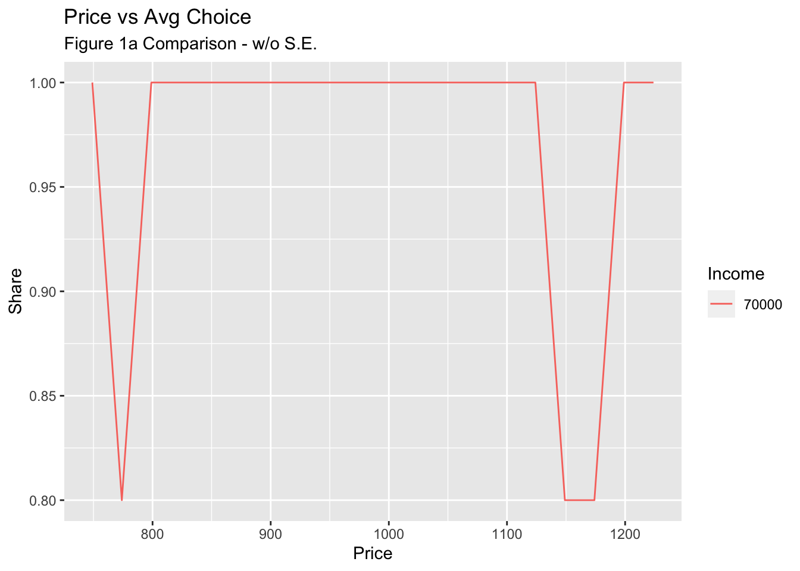
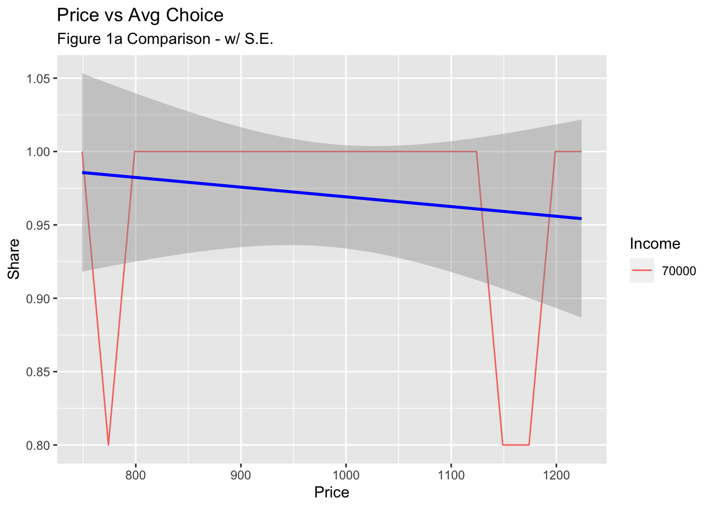
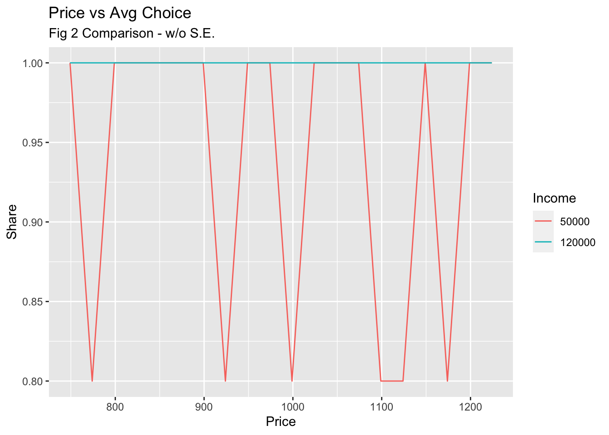
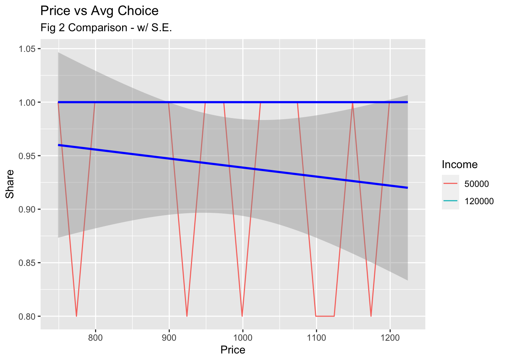
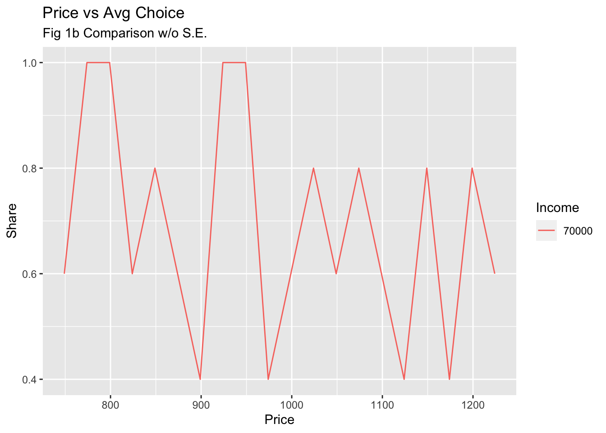
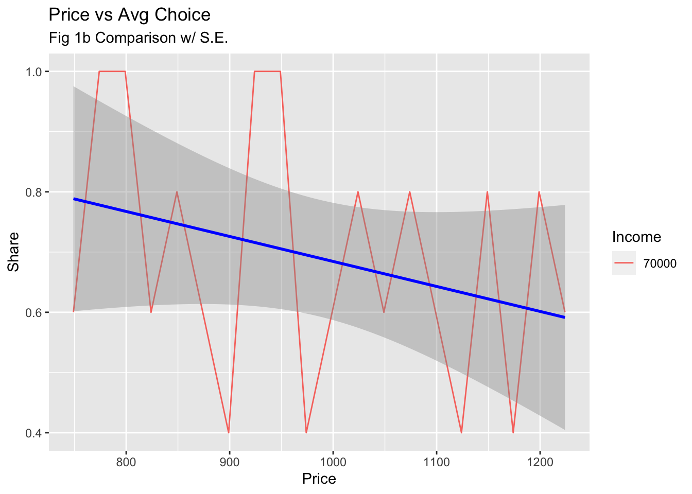
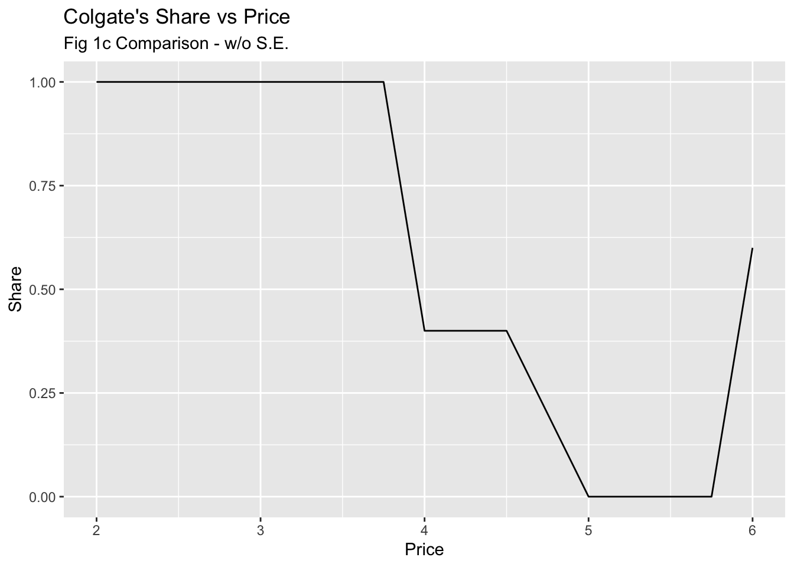

── Conflicts ────────────────────────────────────────── tidyverse_conflicts() ──
✖ dplyr::filter() masks dfidx::filter(), stats::filter()
✖ dplyr::lag() masks stats::lag()
ℹ Use the conflicted package (<http://conflicted.r-lib.org/>) to force all conflicts to become errors
# This function:# 1) Queries the OpenAI API with chosen method and settings# 2) Creates a vector then assigns each response to the vector.# 3) Searches each string in the vector for given keywords, and returns the FIRST keyword foundget_response <-function(n =5, chat =FALSE, prompt, role, keywords){#Change formatting and model based on chat TRUE/FALSEif(chat ==TRUE){ model <-'gpt-4' prompt <-list(list('role'='system', 'content'= role), list('role'='user', 'content'= prompt)) }if(chat ==FALSE){ model <-'text-davinci-003' }#identify model and temperature wanted temp <-1 tokens <-100#Use function based on chat argumentif(chat ==TRUE){ response <-create_chat_completion(model = model, n = n, messages = prompt, temperature = temp, max_tokens = tokens, best_of = n) }if(chat ==FALSE){ response <-create_completion(model = model, n = n, prompt = prompt, temperature = temp, max_tokens = tokens, best_of = n ) }#Create choices object to access the choices directly choices <- response$choices#Create a text vector to store the text in text_v <-c()#Loop through each choice with appropriate access pathfor (i in1:n){if(chat ==TRUE){ text_v <-c(text_v, choices[[4]][[i]]) }if(chat ==FALSE){ text_v <-c(text_v, choices[[1]][[i]]) } }#Create vector to store true/false string comparisons answer <-c()#Loop through individual responsesfor (string in text_v){ is_true <-c()#Loop through the keywordsfor(keyword in keywords){#Append the is_true vector with the result of keyword search is_true <-c(is_true, grepl(keyword, string, ignore.case =TRUE)) }#If there is more than 1 keyword found, then return inconclusive. Else, return the keyword that is found. answer <-c(answer, ifelse(sum(is_true) >1, 'Inconclusive', keywords[is_true])) }#Makes sure all elements are in a single vector answer <-unlist(answer, FALSE)return(list(answer = answer, text_v = text_v))#return(answer) }
#One Laptop
##Prompt
one_prompt <-function(price =1000,income =50000,prompt_num =1){ role <-'You are a customer taking part in a product survey. Make the most reasonable purchase choice given the following situation. Please respond with ONLY the name of the product you purchased. If you did not purchase anything, say "None."'#Originial prompt from the paperif(prompt_num ==1){ prompt <-paste0('A customer is randomly selected while shopping for laptops. Their annualincome is $', income,'.While shopping, the customer sees a Surface Laptop 3, Price: $', price,',Processor: Intel Core i5, RAM: 8GB, Screen Size: 13.5in, SD: 128GBThe customer is asked, after they finish shopping: Did you purchase any lap-top? If so, which one?Customer: ') }#Excludes 'You:' or "Customer:' and makes the model the shopper instead of third personif(prompt_num ==2){ prompt <-paste0('Pretend you are a customer who has been randomly selected while shopping for laptops. Your annual income is $', income,'. While shopping, you see a Surface Laptop 3, Price: $', price, ', Processor: Intel Core i5, RAM: 8GB, Screen Size: 13.5 in, SD: 128 GB. You are asked after you finish shopping: Did you purchase any laptop? If so, which one?') }#says 'any' instead of 'this' and 'includes 'You:'if(prompt_num ==3){ prompt <-paste0('Pretend you are a customer who has been randomly selected while shopping for laptops. Your annual income is $', income,'. While shopping, you see a Surface Laptop 3, Price: $', price,',Processor: Intel Core i5, RAM: 8GB, Screen Size: 13.5in, SD: 128GB. You are asked after you finish shopping: Did you purchase any laptop? If so, which one? You: ') }#says 'this' instead of 'any' and drops 'If so, which one?'#Neither model likes this one. Primarily reports no. if(prompt_num ==4){ prompt <-paste0('Pretend you are a customer who has been randomly selected while shopping for laptops. Your annual income is $', income,'. While shopping, you see a Surface Laptop 3, Price: $', price,',Processor: Intel Core i5, RAM: 8GB, Screen Size: 13.5in, SD: 128GB. You are asked after you finish shopping: Did you purchase this laptop? You: ') }#says 'If so, which one' after 'Did you purchase this laptop?'if(prompt_num ==5){ prompt <-paste0('Pretend you are a customer who has been randomly selected while shopping for laptops. Your annual income is $', income, '. While shopping, you see a Surface Laptop 3, Price: $', price,',Processor: Intel Core i5, RAM: 8GB, Screen Size: 13.5in, SD: 128GB. You are asked after you finish shopping: Did you purchase this laptop? If so, which one? You: ') }if(prompt_num ==6){ prompt <-paste0('Pretend you are a customer who has been randomly selected while shopping for laptops. Your annual income is $', income, '. While shopping, you see a Surface Laptop 3, Price: $', price,',Processor: Intel Core i5, RAM: 8GB, Screen Size: 13.5in, SD: 128GB. Did you purchase the laptop? ') }#Notes and observations#Shocking difference between including "Pretend" and not including "Pretend" after adjusting for multiple other options. Adding "Pretend" gives much more succinct responses.return( c(prompt, role) ) }
##DF
#Model choicechat <-FALSE#Prompt numberprompt_num <-1#Set k to change in pricek <-25#Set j to number of pricesnum_prices <-20#Max is 128#Set n to number of iterations PER PRICEn <-5#initiate starting priceprice <-749if(chat ==TRUE){#Identify keywords to look for in responses keywords <-c('Surface', 'No')}if(chat ==FALSE){ keywords <-c('Yes', 'No')}# Different incomes to useincome <-c(70000)#Initiate variables used in loopchoice_v <-c()income_v <-c()price_v <-c()text_v <-c()#Loop through the prompts#Prompt for each price at given income levelfor(inc in income){ new_price <- pricefor(i in1:num_prices){#Identify the prompt prompt_func <-one_prompt(price = new_price, income = inc, prompt_num = prompt_num)#Split it into role / prompt prompt <- prompt_func[1] role <- prompt_func[2]#Append the choice vector with newest choice response <-get_response(n = n, chat = chat, prompt = prompt, role = role, keywords = keywords) choice_v <-c(choice_v, unlist(response[1])) text_v <-c(text_v, unlist(response[2]))#Append income and price vectors to match the choice vector income_v <-c(income_v, rep(inc, n)) price_v <-c(price_v, rep(new_price, n)) new_price <- new_price + k } }#Create dynamic variable based on model and promptif(chat ==TRUE){ var_name <-paste('one_', 'chat_p', prompt_num, '_inc', length(income), sep ='')}if(chat ==FALSE){ var_name <-paste('one_', 'comp_p', prompt_num, '_inc', length(income), sep ='')}#Assign dataframe appropriate nameassign(var_name, data.frame(choice = choice_v, income = income_v, price = price_v, text = text_v))# Perform cleaning on the dynamically named dataframedf <-get(var_name)df_nn <-drop_na(df)df_clean <-subset(df_nn, choice !='Inconclusive')df_binary <- df_clean |>mutate(choice =recode(choice, "Yes"=1, "No"=0))df_mean <- df_binary |>group_by(price, income) |>summarise(avg_choice =mean(choice, na.rm =TRUE))
`summarise()` has grouped output by 'price'. You can override using the
`.groups` argument.
# If you want to save the cleaned dataframes back to dynamically named variables, you can use assign again:assign(paste0(var_name, "_mean"), df_mean)
Fig 1a Plots
ggplot(data = one_comp_p1_inc1_mean, aes(x = price, y = avg_choice, color =as.factor(income), group = income)) +geom_line() +labs(title ="Price vs Avg Choice",subtitle ="Figure 1a Comparison - w/o S.E.",y ="Share",x ="Price",color ="Income")

ggplot(data = one_comp_p1_inc1_mean, aes(x = price, y = avg_choice, color =as.factor(income), group = income)) +geom_line() +geom_smooth(method ="lm", se =TRUE, color ="blue") +# Add smoothed line with SE shadinglabs(title ="Price vs Avg Choice",subtitle ="Figure 1a Comparison - w/ S.E.",y ="Share",x ="Price",color ="Income")
`geom_smooth()` using formula = 'y ~ x'

#Model choicechat <-FALSE#Prompt numberprompt_num <-1#Set k to change in pricek <-25#Set j to number of pricesnum_prices <-20#Max is 128#Set n to number of iterations PER PRICEn <-5#initiate starting priceprice <-749if(chat ==TRUE){#Identify keywords to look for in responses keywords <-c('Surface', 'No')}if(chat ==FALSE){ keywords <-c('Yes', 'No')}# Different incomes to useincome <-c(50000, 120000)#Initiate variables used in loopchoice_v <-c()income_v <-c()price_v <-c()text_v <-c()#Loop through the prompts#Prompt for each price at given income levelfor(inc in income){ new_price <- pricefor(i in1:num_prices){#Identify the prompt prompt_func <-one_prompt(price = new_price, income = inc, prompt_num = prompt_num)#Split it into role / prompt prompt <- prompt_func[1] role <- prompt_func[2]#Append the choice vector with newest choice response <-get_response(n = n, chat = chat, prompt = prompt, role = role, keywords = keywords) choice_v <-c(choice_v, unlist(response[1])) text_v <-c(text_v, unlist(response[2]))#Append income and price vectors to match the choice vector income_v <-c(income_v, rep(inc, n)) price_v <-c(price_v, rep(new_price, n)) new_price <- new_price + k } }#Create dynamic variable based on model and promptif(chat ==TRUE){ var_name <-paste('one_', 'chat_p', prompt_num, '_inc', length(income), sep ='')}if(chat ==FALSE){ var_name <-paste('one_', 'comp_p', prompt_num, '_inc', length(income), sep ='')}#Assign dataframe appropriate nameassign(var_name, data.frame(choice = choice_v, income = income_v, price = price_v, text = text_v))# Perform cleaning on the dynamically named dataframedf <-get(var_name)df_nn <-drop_na(df)df_clean <-subset(df_nn, choice !='Inconclusive')df_binary <- df_clean |>mutate(choice =recode(choice, "Yes"=1, "No"=0))df_mean <- df_binary |>group_by(price, income) |>summarise(avg_choice =mean(choice, na.rm =TRUE))
`summarise()` has grouped output by 'price'. You can override using the
`.groups` argument.
# If you want to save the cleaned dataframes back to dynamically named variables, you can use assign again:assign(paste0(var_name, "_mean"), df_mean)
Fig 2 Plots
ggplot(data = one_comp_p1_inc2_mean, aes(x = price, y = avg_choice, color =as.factor(income), group = income)) +geom_line() +labs(title ="Price vs Avg Choice",subtitle ='Fig 2 Comparison - w/o S.E.',y ="Share",x ="Price",color ="Income")

ggplot(data = one_comp_p1_inc2_mean, aes(x = price, y = avg_choice, color =as.factor(income), group = income)) +geom_line() +geom_smooth(method ="lm", se =TRUE, color ="blue") +# Add smoothed line with SE shadinglabs(title ="Price vs Avg Choice",subtitle ='Fig 2 Comparison - w/ S.E.',y ="Share",x ="Price",color ="Income")
`geom_smooth()` using formula = 'y ~ x'

Two Laptops
Prompt
two_prompt <-function(income =50000, surface_price =999, prompt_num =1){ role <-'You are a consumer taking part in a product survey. Make the most reasonable purchase choice given the following situation.'#Prompt 1 is the paper's promptif(prompt_num ==1){ prompt <-paste('A customer is randomly selected while shopping for laptops. Their annualincome is $',income,'.While shopping, the customer has three options:– Surface Laptop 3, Price: $', surface_price,' Processor: Intel Core i5, RAM:8GB, Screen Size: 13.5in, SD: 128GB– Macbook Air (2019), Price: $999, Processor: Intel Core i5, RAM: 8GB,Screen Size: 13.3in, SD: 128GBThey also have the option not to purchase a laptop. The customer is asked,after they finish shopping: Which laptop, if any, did you purchase? Customer: ', sep ="") }if(prompt_num ==2){ prompt <-paste('Pretend you are a customer who has been randomly selected while shopping for laptops. Your annual income is $', income,'. While shopping, you have three options: – Surface Laptop 3, Price: $', surface_price,' Processor: Intel Core i5, RAM:8GB, Screen Size: 13.5in, SD: 128GB– Macbook Air (2019), Price: $999, Processor: Intel Core i5, RAM: 8GB,Screen Size: 13.3in, SD: 128GBYou also have the option not to purchase a laptop. Which laptop, if any, did you purchase?', sep ="") }return( c(prompt, role))}
DF
#modelchat =FALSE#Set k to price changek =25#Set j to number of pricesnum_prices =20#Set n to number of iterations PER PRICEn =5# Different incomes to useincome <-c(70000)#Surface Pricesurface_price <-749#keywords to search for in the responsekeywords <-c('surface', 'macbook')#Prompt 1 is the paper's promptprompt_num <-1choice_v <-c()income_v <-c()price_v <-c()#Loop through the prompts#Prompt for each price at given income levelfor(inc in income){ new_price <- surface_pricefor(i in1:num_prices){#Identify the prompt prompt_func <-two_prompt(surface_price = new_price, income = inc, prompt_num = prompt_num)#Split it into role / prompt prompt <- prompt_func[1] role <- prompt_func[2]#Append the choice vector with newest choice response <-get_response(n = n, chat = chat, prompt = prompt, role = role, keywords = keywords) choice_v <-c(choice_v, unlist(response[1])) text_v <-c(text_v, unlist(response[2]))#Append income and price vectors to match the choice vector income_v <-c(income_v, rep(inc, n)) price_v <-c(price_v, rep(new_price, n)) new_price <- new_price + k } }#Create dynamic variable based on model and promptif(chat ==TRUE){ var_name <-paste('two_', 'chat_p', prompt_num, '_inc', length(inc), sep ='')}if(chat ==FALSE){ var_name <-paste('two_', 'comp_p', prompt_num, '_inc', length(inc), sep ='')}#Assign dataframe appropriate nameassign(var_name, data.frame(choice = choice_v, income = income_v, price = price_v))# Perform cleaning on the dynamically named dataframedf <-get(var_name)df_nn <-drop_na(df)df_clean <-subset(df_nn, choice !='Inconclusive')df_binary <- df_clean |>mutate(choice =recode(choice, "surface"=1, "macbook"=0))df_mean <- df_binary |>group_by(price, income) |>summarise(avg_choice =mean(choice, na.rm =TRUE))
`summarise()` has grouped output by 'price'. You can override using the
`.groups` argument.
# If you want to save the cleaned dataframes back to dynamically named variables, you can use assign again:assign(paste0(var_name, "_mean"), df_mean)
Fig 1b Plots
ggplot(data = two_comp_p1_inc1_mean, aes(x = price, y = avg_choice, color =as.factor(income), group = income)) +geom_line() +labs(title ="Price vs Avg Choice",subtitle ='Fig 1b Comparison w/o S.E.',y ="Share",x ="Price",color ="Income")

ggplot(data = two_comp_p1_inc1_mean, aes(x = price, y = avg_choice, color =as.factor(income), group = income)) +geom_line() +geom_smooth(method ="lm", se =TRUE, color ='blue') +labs(title ="Price vs Avg Choice",subtitle ='Fig 1b Comparison w/ S.E.',y ="Share",x ="Price",color ="Income")
`geom_smooth()` using formula = 'y ~ x'

Toothpaste
Prompt
#Create prompt with income, colgate price and crest price. tp_prompt <-function(colgate_price =2, crest_price =4, income =50000, prompt_num =1){#prompts 1-3 are from the paper. if(prompt_num ==1){ option <-'' }if(prompt_num ==2){ option <-' The customer says thatlast time they shopped for toothpaste they purchased the Colgate whiteningtoothpaste.' }if(prompt_num ==3){ option <-' This customer boughtthe Colgate whitening toothpaste last time they shopped for toothpaste.' } prompt <-paste('A customer is randomly selected while shopping in the supermarket. Theirannual income is $',income,'.While shopping, the customer passes by the toothpaste aisle and sees two op-tions:– Colgate whitening toothpaste with fluoride, price $',colgate_price,'.– Crest whitening toothpaste with fluoride, price $',crest_price,'.They also have the option not to purchase toothpaste.',option,' The customer is asked,after they finish shopping: Which toothpaste, if any, did you purchase?Customer: ', sep ="")return(prompt)}
DF
choice_v <-c()income_v <-c()price_v <-c()text_v <-c()#Option 1 is Colgate#Option 2 is Crest#Option 3 is No Purchase#Choose Modelchat =FALSE#Choose prompt numprompt_num <-1#Set k to increase in price changek <- .25#Set j to number of pricesnum_prices <-17#Set n to number of iterations PER PRICEn <-5colgate_price <-2keywords <-c('crest', 'colgate')income <-c(70000)#Prompt for each price at given income levelfor(inc in income){ new_price <- colgate_pricefor(i in1:num_prices){#Identify the prompt prompt_func <-tp_prompt(colgate_price = new_price, income = inc, prompt_num = prompt_num)#Split it into role / prompt prompt <- prompt_func[1] role <- prompt_func[2]#Append the choice vector with newest choice response <-get_response(n = n, chat = chat, prompt = prompt, role = role, keywords = keywords) choice_v <-c(choice_v, unlist(response[1])) text_v <-c(text_v, unlist(response[2]))#Append income and price vectors to match the choice vector income_v <-c(income_v, rep(inc, n)) price_v <-c(price_v, rep(new_price, n)) new_price <- new_price + k } }#Create dynamic variable based on model and promptif(chat ==TRUE){ var_name <-paste('tp_', 'chat_p', prompt_num, '_inc', length(inc), sep ='')}if(chat ==FALSE){ var_name <-paste('tp_', 'comp_p', prompt_num, '_inc', length(inc), sep ='')}#Assign dataframe appropriate nameassign(var_name, data.frame(choice = choice_v, income = income_v, price = price_v, text = text_v))# Perform cleaning on the dynamically named dataframedf <-get(var_name)df_nn <-drop_na(df)df_clean <-subset(df_nn, choice !='Inconclusive')df_binary <- df_clean |>mutate(choice =recode(choice, "colgate"=1, "crest"=0))df_mean <- df_binary |>group_by(price, income) |>summarise(avg_choice =mean(choice, na.rm =TRUE))
`summarise()` has grouped output by 'price'. You can override using the
`.groups` argument.
# If you want to save the cleaned dataframes back to dynamically named variables, you can use assign again:assign(paste0(var_name, "_mean"), df_mean)
Fig 1c Plots
ggplot(data = tp_comp_p1_inc1_mean, aes(x = price, y = avg_choice)) +geom_line() +labs(title ="Colgate's Share vs Price",subtitle ="Fig 1c Comparison - w/o S.E.",x ="Price", y ="Share")

ggplot(data = tp_comp_p1_inc1_mean, aes(x = price, y = avg_choice, color =as.factor(income), group = income)) +geom_line() +geom_smooth(method ="lm", se =TRUE, color ='blue') +labs(title ="Price vs Avg Choice",subtitle ='Fig 1c Comparison - With S.E.',y ="Share",x ="Price",color ="Income")